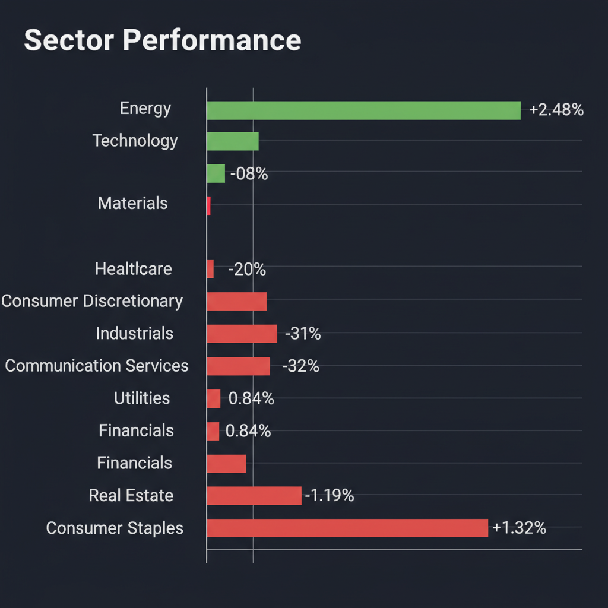
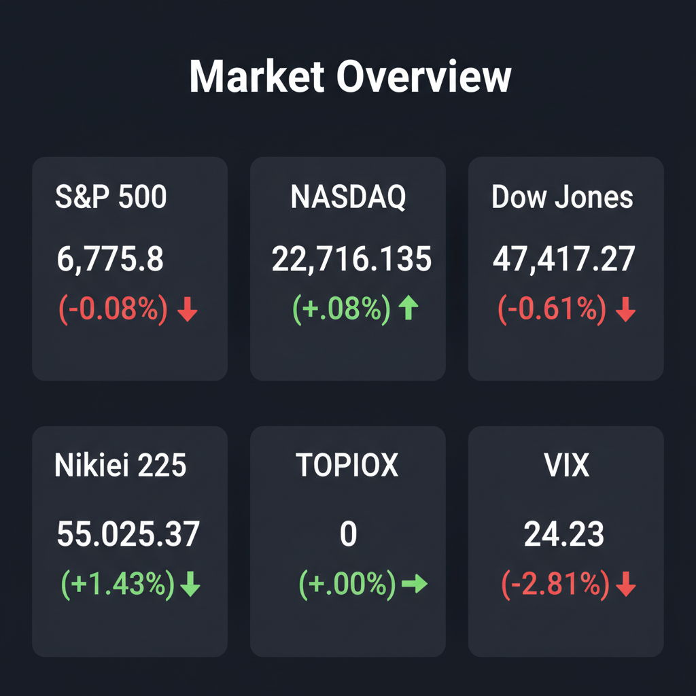

Daily Investment Report - 2026-03-12
Generated: 2026/3/12 8:12:22


投資チームミーティングの議長として、各エージェントの分析を統合し、投資家の皆様が即座にアクションを取れるよう整理した最終レポートをお届けします。
市場は表面的な「適温相場」の楽観論に覆われていますが、水面下では激しいパラダイムシフトとリスクの急拡大が起きています。本レポートを活用し、ポートフォリオの再構築を進めてください。
1. エグゼクティブサマリー
- 主要指数は最高値圏にありますが、VIX指数が24台へ急騰しており、大型ハイテク株への一極集中に対する「暴落（テールリスク）」への警戒が急激に高まっています。
- 投資戦略の軸を、バリュエーションが極限まで拡大した「大型メガテック株」から、AI巨額投資の恩恵を確実に受ける「中小型の裏方インフラ企業」や、インフレヘッジとなる「エネルギーセクター」へと移行すべき転換点です。
- 全体的な市場のボラティリティ急拡大に備え、現金比率を30〜40%に引き上げて守りを固めつつ、財務が強固な中小型ニッチトップ株へ厳選して資金を振り向ける「攻守のハイブリッド戦略」を推奨します。
2. 注目銘柄リスト
大型のメガテック銘柄（NVIDIA、Apple等）は既に極端な割高水準にあり新規エントリーは非推奨です。今回は、機関投資家の資金流入余地が大きい「隠れた中小型成長株」を中心にピックアップしました。
強気（買い推奨）
- Powell Industries (POWL) [時価総額: 約$3B]
AIデータセンター向け電力配電システムのニッチトップであり、売上成長率40%超と高収益ながらPER15〜18倍と極めて割安に放置されています。
- Modine Manufacturing (MOD) [時価総額: 約$5B]
AIサーバー向け液冷・空調システムで急成長しており、メガテックの莫大な設備投資（CapEx）の恩恵を直接受ける「裏方」として最適な投資先です。
- ダイヘン (6622) [時価総額: 約2,500億円]
日本の変圧器・電力機器の大手。国内データセンター建設ラッシュの恩恵を受け、強固な営業キャッシュフローと低PER（約15倍）を兼ね備えたバリュー株です。
- Macbee Planet (7095) [時価総額: 約400億円]
AIデータ分析によるLTVマーケティング支援企業。売上成長率30%超、高ROE・高利益率の黒字企業でありながら時価総額が小さく、今後の再評価で爆発的な上昇が見込めます。
- 精工技研 (6834) [時価総額: 約450億円]
AIの電力不足を解決する光通信網向けコネクタ製造機器で世界トップシェアを誇り、高い参入障壁とキャッシュリッチな好財務を持つ「安全なテンバガー候補」です。
中立（様子見）
- Hims & Hers Health (HIMS) [時価総額: 約$4.5B]
GLP-1（肥満症治療薬）の遠隔医療プラットフォームで急成長し黒字化も達成していますが、PERが高く、市場全体の調整局面で連れ安するリスクがあるため引き付けが必要です。
- Recursion Pharmaceuticals (RXRX) [時価総額: 約$1.5B]
AI創薬のパイオニアでNVIDIAも出資する将来性抜群の企業ですが、金利高止まり環境下での赤字グロース株であり、臨床試験リスクも伴うため打診買いに留めるべきです。
- トリケミカル研究所 (4369) [時価総額: 約1,300億円]
半導体向け高純度化学材料のニッチトップで高収益体質ですが、半導体セクター全体の高値警戒感とボラティリティを考慮し、明確な押し目形成を待つべきです。
弱気（警戒）
- Target (TGT) [時価総額: 約$65B] ※中小型の一般消費財株全般の代表として
インフレと高金利による「低所得者層の消費疲れ・クレカ延滞増」が顕著に表れており、PERが低く見えても業績下方修正のバリュートラップに陥る危険性が高いです。
- 不動産セクターETF (XLRE) [時価総額: ETFのため指標規模]
FRBの利下げ開始が後ずれし長期金利が高止まりする中、負債コストの重い商業用不動産（CRE）などを抱える関連銘柄は構造的なダウントレンドにあります。
3. セクター推奨ランキング
1.
エネルギー・電力インフラ（強気）
AIの莫大な電力需要（データセンター、冷却、変圧器）という構造的成長に加え、原油高や中東情勢によるインフレ再燃時の最強のヘッジ先となります。
2.
日本の金融・大型バリュー（強気）
日銀の「金利のある世界」への政策転換による利ざや改善と、PBR1倍割れ是正に向けた株主還元策が、海外マネーの強力な受け皿となります。
3.
AIインフラ・エッジAI（中立〜強気）
メガテックではなく、AIを物理的に支える半導体製造装置や、端末側（スマホ・PC）で機能する省電力チップなど、二次的恩恵を受けるニッチセクターを選別します。
4.
一般消費財・生活必需品（弱気）
パンデミック時の過剰貯蓄が枯渇し、物価高による実体経済の消費減退が明白に表れているため、資金を抜くべきセクターです。
5.
不動産・公益事業（弱気）
金利高止まり（Higher for Longer）の悪影響を最も強く受ける債券代替セクターであり、負債コストの増加がストレートに業績を圧迫します。
4. 今週の注目イベント
- 火曜日: 米・消費者物価指数（CPI）発表（インフレの粘着性とFRBの利下げシナリオを左右する最重要指標）
- 木曜日: 米・新規失業保険申請件数（労働市場の逼迫緩和度合いとソフトランディング期待の確認）
- 金曜日: 日銀・金融政策決定会合（長期国債買い入れの減額規模および追加利上げに関するガイダンスに警戒）
- 随時: FRB高官によるパネルディスカッション発言（インフレデータを受けた「年内利下げ回数」への言及）
5. リスク要因
- VIX急騰と極端な一極集中によるフラッシュ・クラッシュ
VIXが24台に急騰しており、メガテック数銘柄への集中投資が逆回転した場合、指数全体を巻き込むパニック売りが発生するリスクがあります。
エネルギー価格の上昇とサービスインフレが継続した場合、FRBの利下げ期待が完全に消滅し、高PERのグロース株のバリュエーションが崩壊します。
日銀のタカ派転換や米国の指標下振れにより日米金利差が急縮小した場合、円キャリートレードの突発的な巻き戻しが起き、日本株の暴落とグローバルな流動性ショックを引き起こす懸念があります。
6. アクションアイテム
市場のボラティリティ急拡大に備え、ポートフォリオ内の現金（または短期国債）比率を直ちに30〜40%まで引き上げ、守りのバッファーを構築してください。
バリュエーションが過熱している大型メガテック株（NVIDIA、Apple等）のエクスポージャーを減らし、AI投資の裏方である「中小型インフラ株（POWL等）」や「エネルギー株」へ資金をローテーションしてください。
中小型株に新規エントリーする場合は、直近サポートラインのやや下（買値の-8%〜-10%目安）にトレーリングストップを必ず設定し、致命傷を防ぐ資金管理を徹底してください。
テクノロジーETF（XLK）や半導体ETF（SMH）に対するアウト・オブ・ザ・マネーのプットオプションを一部購入し、AIバブル崩壊という最悪のシナリオに対する保険（ヘッジ）をかけてください。